台北市北投區
基本資訊
位於台北市北部，地處台北盆地邊緣，擁有豐富的溫泉資源與自然景觀，是台北最著名的休閒度假區之一。區內地形以丘陵與河谷為主，北投溪流域穿過市區，形成獨特的自然與人文景觀。 北投因溫泉而聞名，自日治時期起即發展成溫泉觀光勝地，至今仍保有眾多溫泉旅館與泡湯設施，結合歷史建築與現代休閒功能，使遊客能同時享受自然、文化與療癒體驗。區內也擁有豐富的文化資產，包括北投圖書館、溫泉博物館與傳統街區，呈現自然景觀與人文歷史融合的特色。
推薦景點
| 北投溫泉博物館
是一座專門展示溫泉歷史與文化的博物館。建築本身原為日治時期的北投公共浴場，具有典型的日式木造建築風格與古典歐風元素，保留了高挑木梁、雕花窗櫺與浴池空間，充滿歷史氛圍。 博物館透過展示文物、照片與多媒體介紹北投溫泉的發展歷程，包括日治時期的溫泉文化、早期浴場的生活型態與現代溫泉休閒的演變。參觀者可以了解溫泉的形成原理、療癒效果，以及北投溫泉如何影響地方社會與觀光發展。
| 地熱谷
是北投溫泉的重要地質景觀，也是台灣少數可近距離觀賞自然地熱現象的地點。這裡因地下熱泉活動，水溫常年維持在攝氏80度左右，並持續冒出白煙，形成迷人的硫磺霧氣景觀，因此又被稱為「青磺谷」。 地熱谷周邊環境綠意盎然，步道規劃完善，遊客可以沿著步道近距離觀察泉水湧出與蒸氣瀰漫的景象，感受地熱活動的自然力量。水面呈現獨特的乳白色或青綠色，搭配山林環境，形成具有視覺張力的自然景觀。
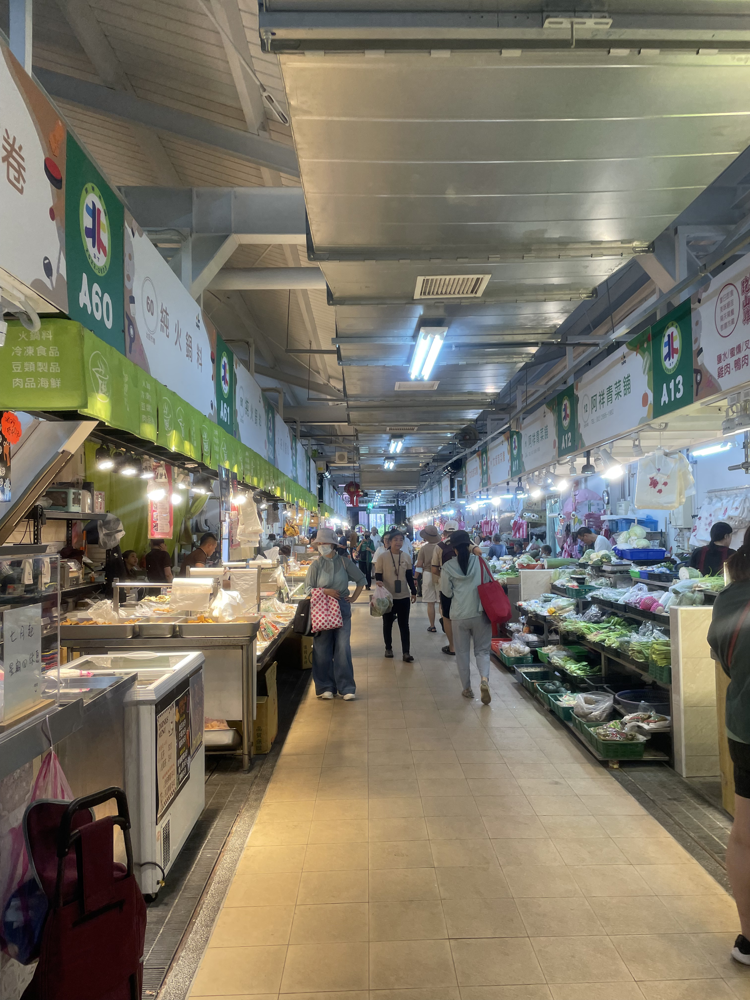
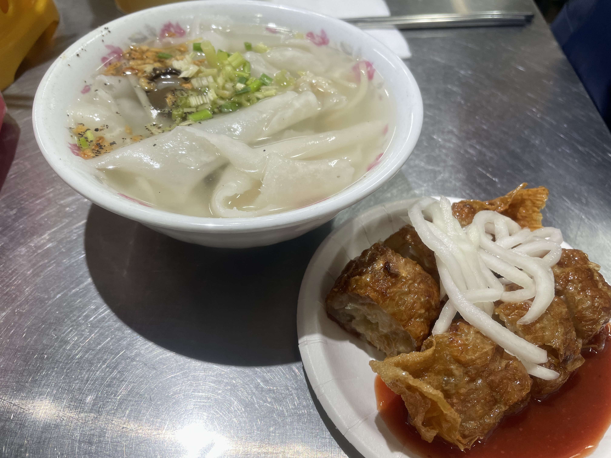
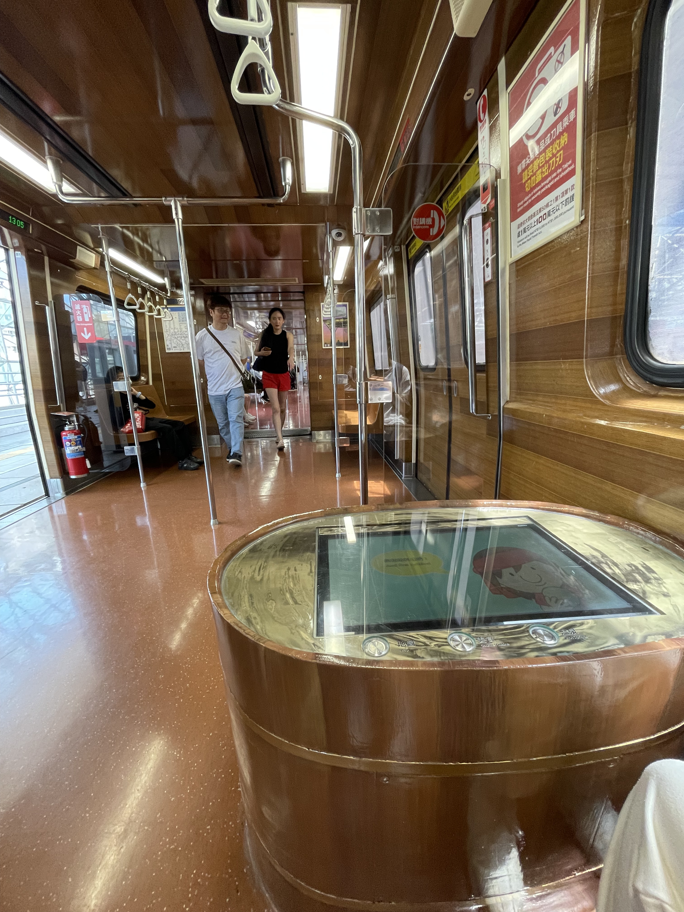
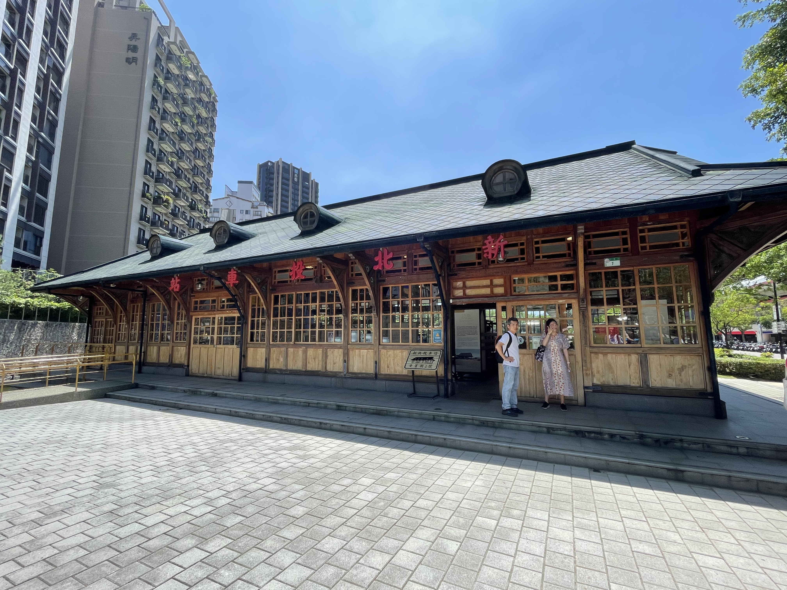
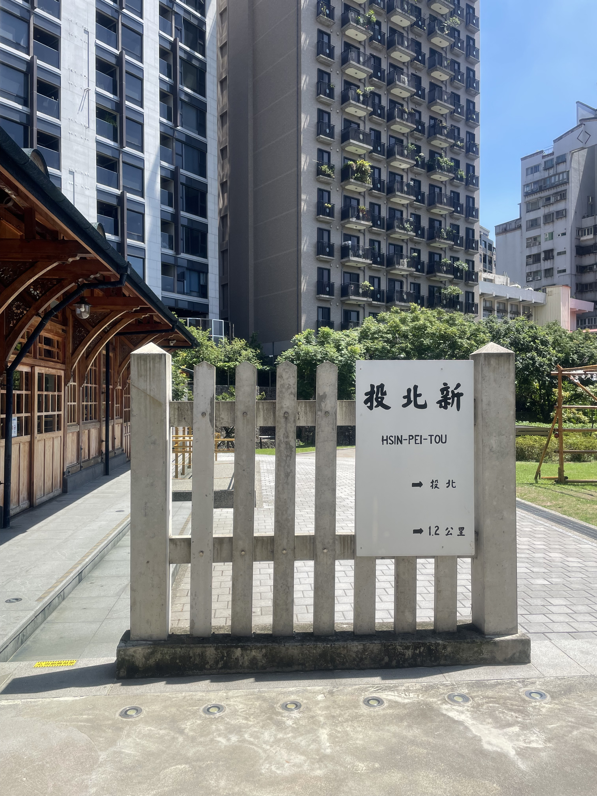
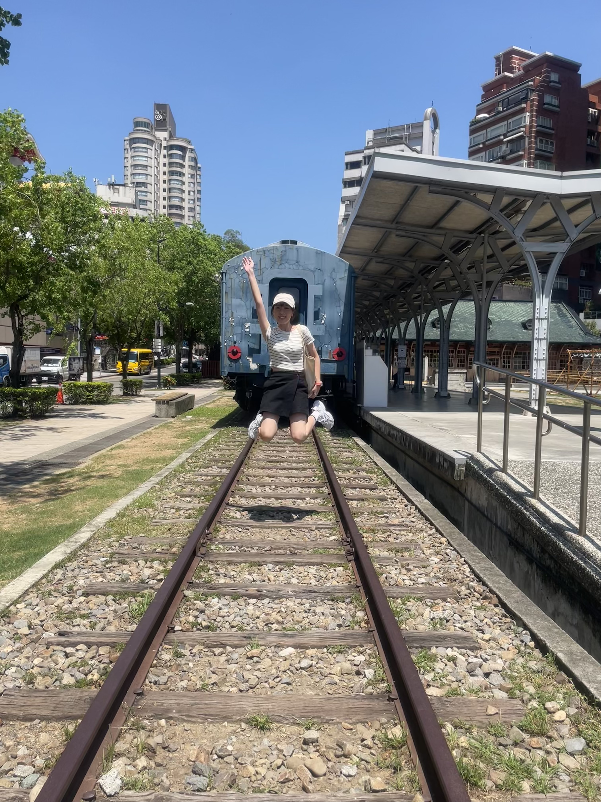
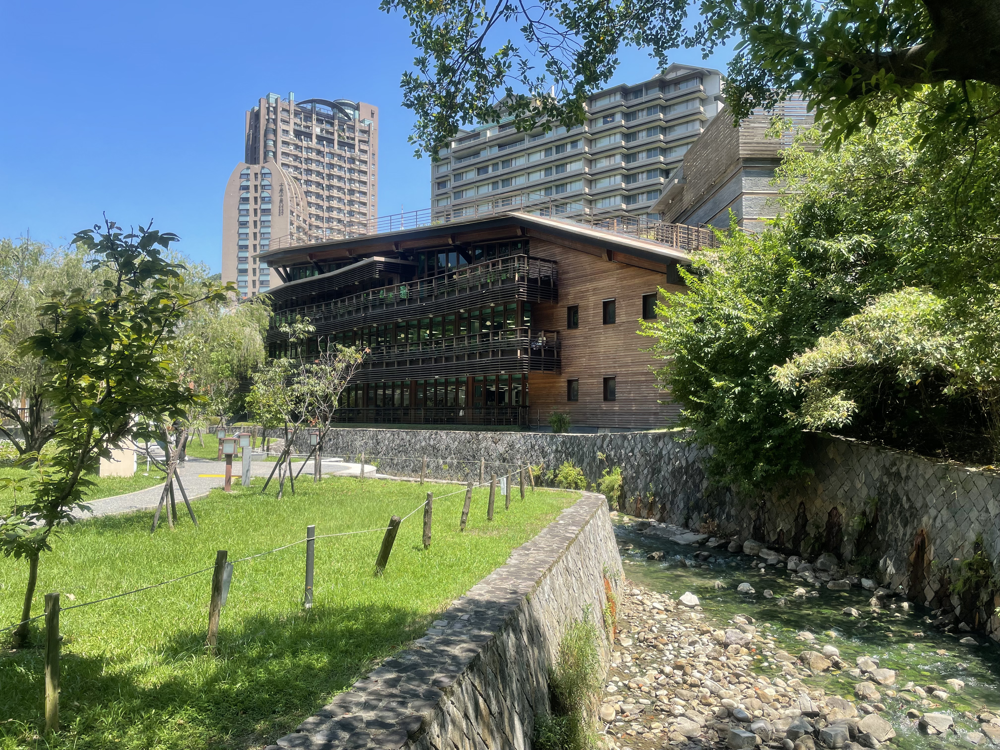
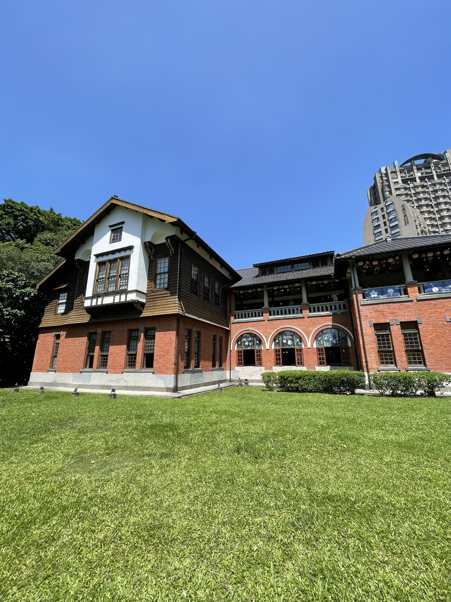
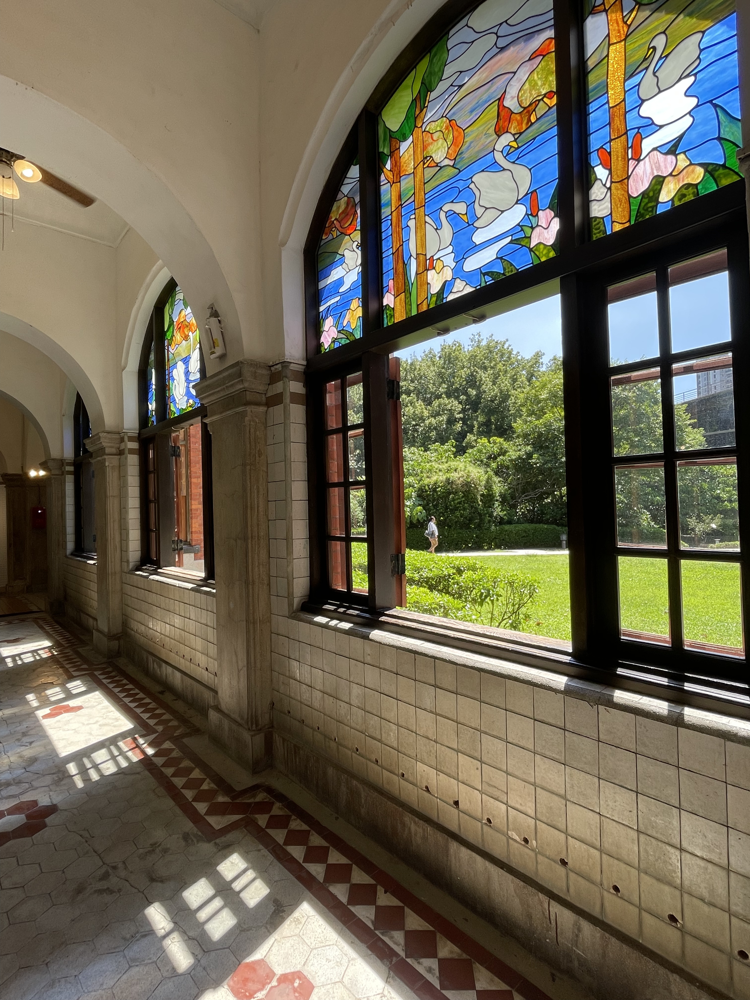
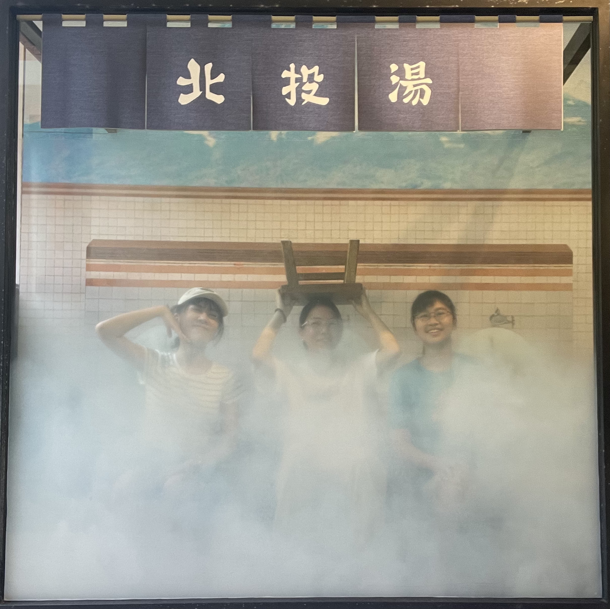
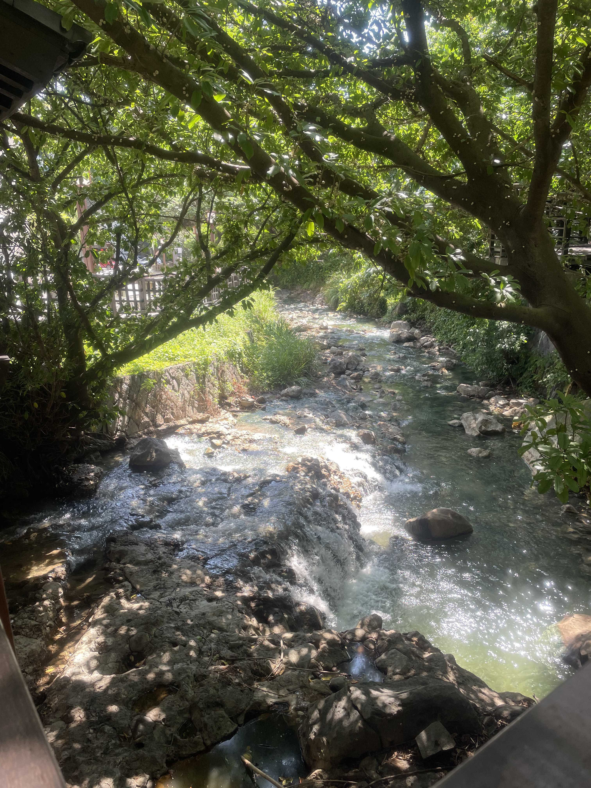
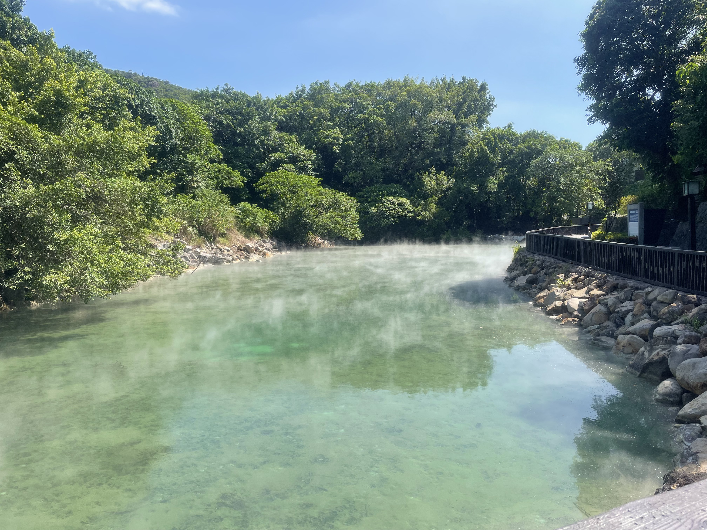